Project 2: Fun with Filters and Frequencies!
Part 1: Fun with Filters
Part 1.1: Finite Difference Operator
To compute the gradient magnitude, I used the humble finite difference Dx=[1 -1] and Dy = [1 -1]T to convolve with the image to get the gradient in x and y directons. Then I take the square root of their quadratic sum to get the magnitude of the gradient.


Part 1.2: Derivative of Gaussian (DoG) Filter
The smoothed image has less noises and clearer edges. I can convolve just once and get an equivalent result.


Part 2: Fun with Frequencies!
Part 2.1: Image "Sharpening"
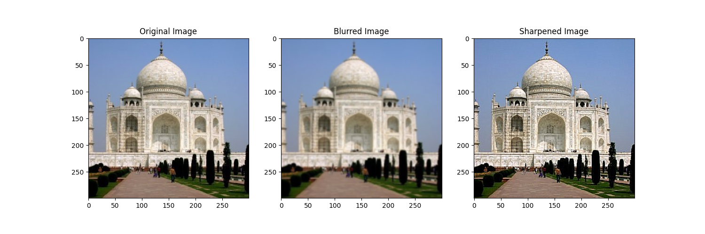

Part 2.2: Hybrid Images
The train one kinda failed since the white train on the right is pretty visible both close and far.

 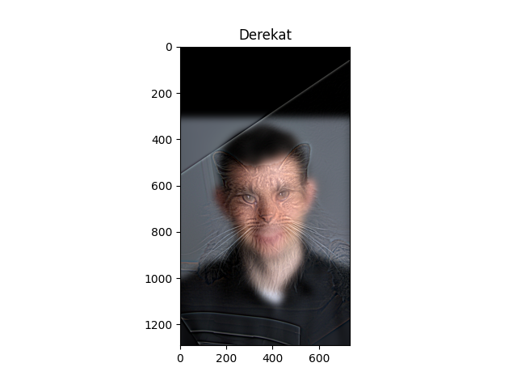
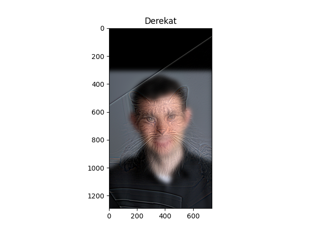

 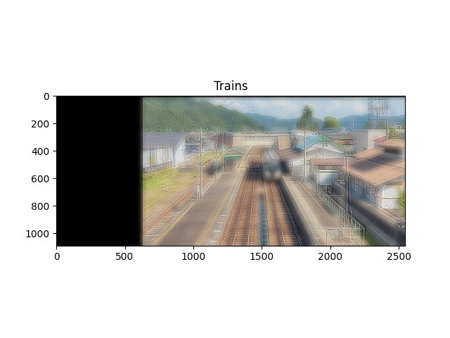
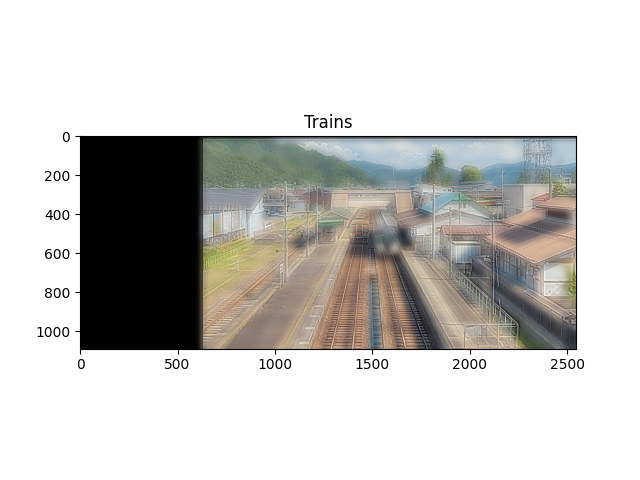


Part 2.3: Gaussian and Laplacian Stacks


 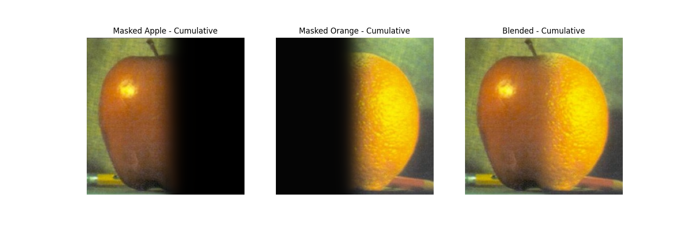
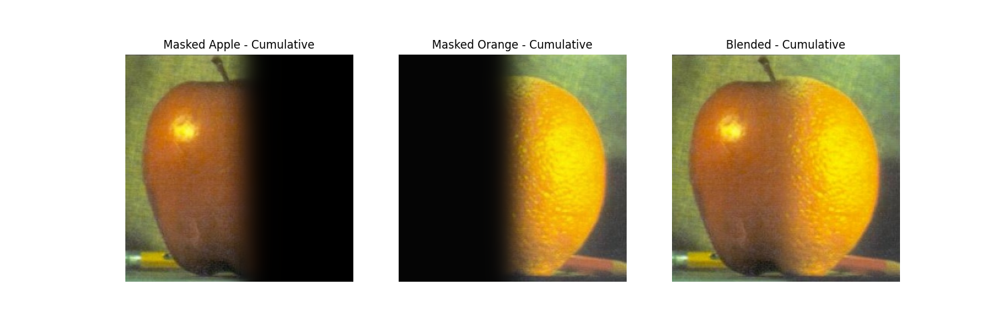
Part 2.4: Multiresolution Blending
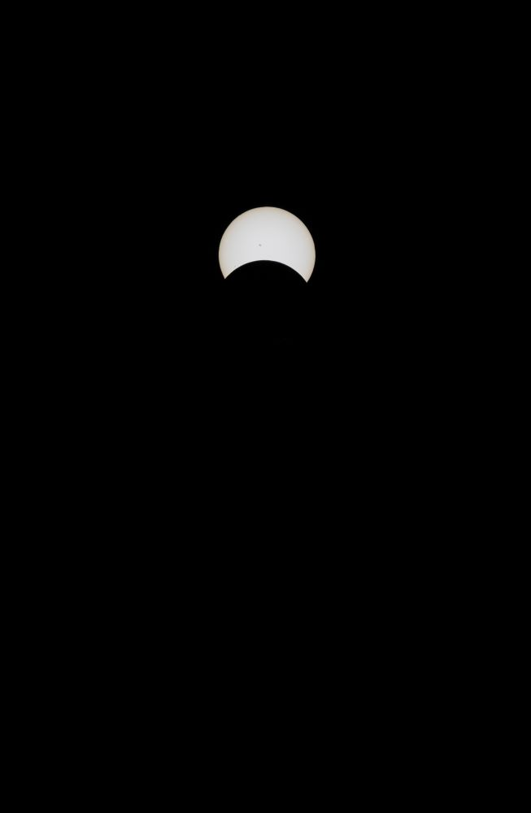
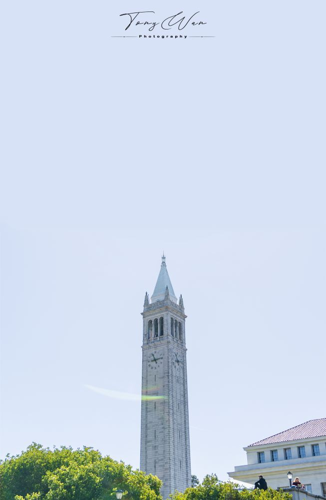


 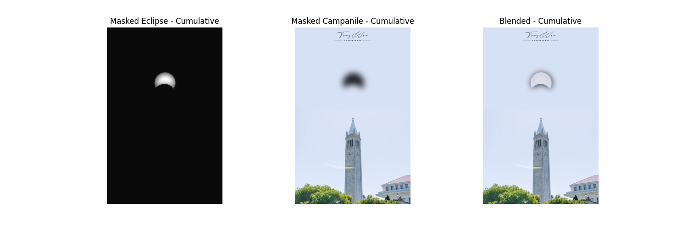
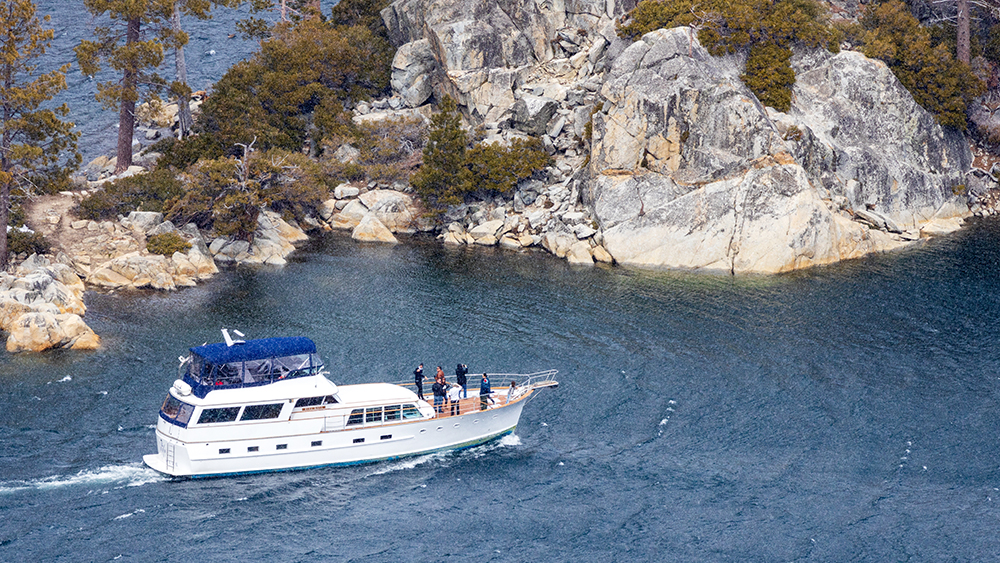
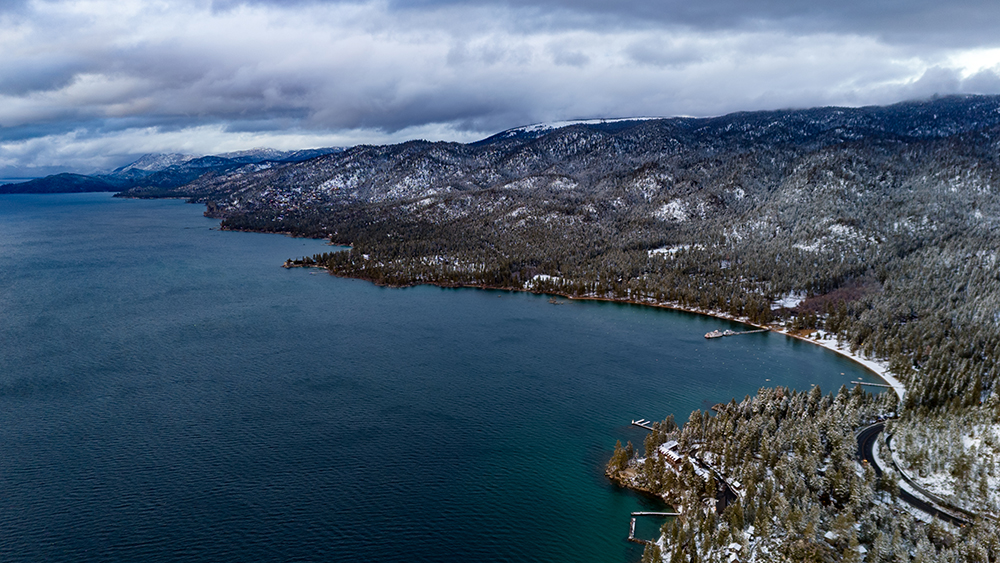
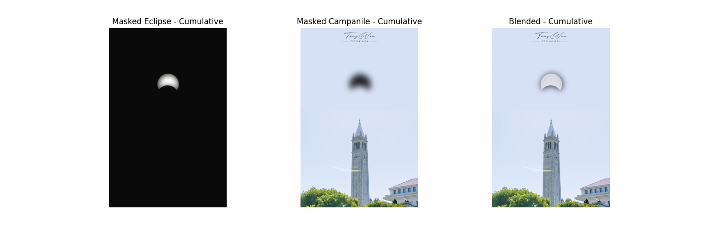
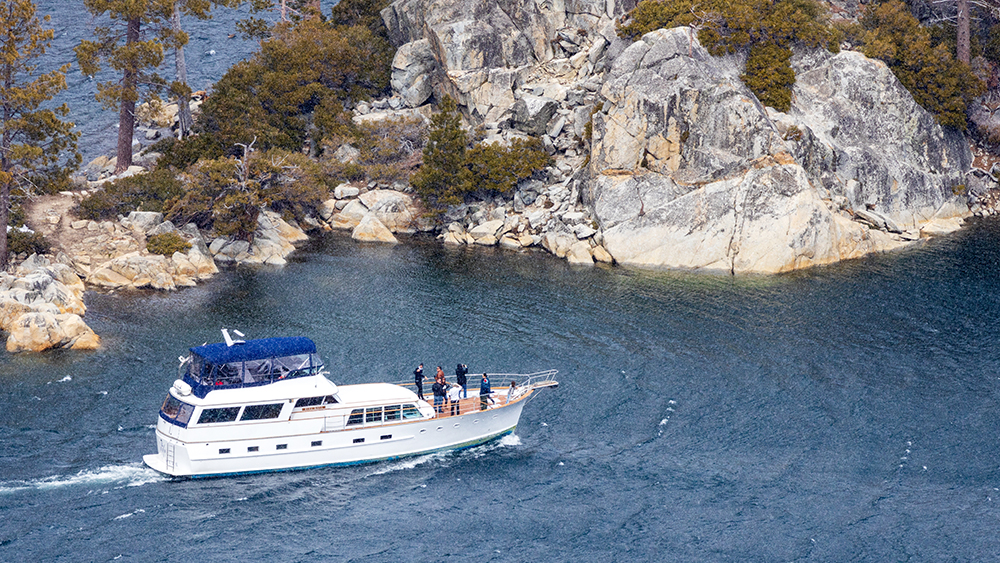
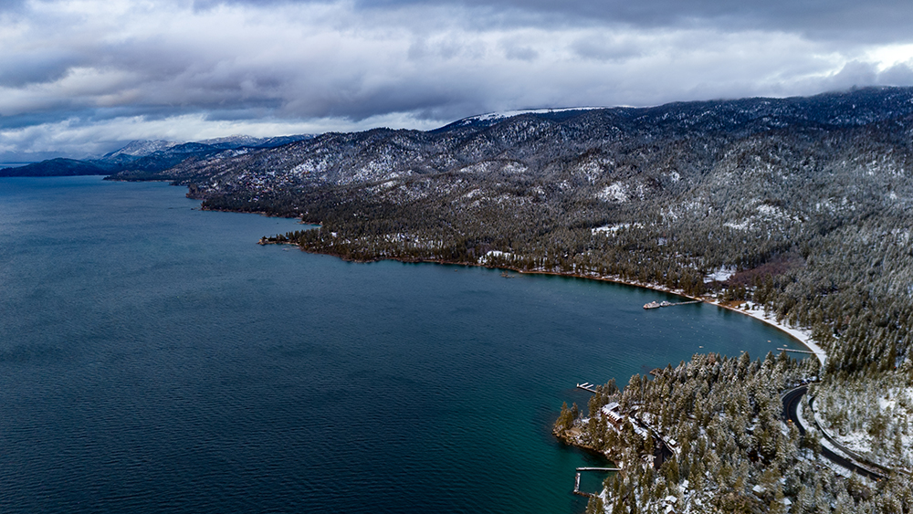


 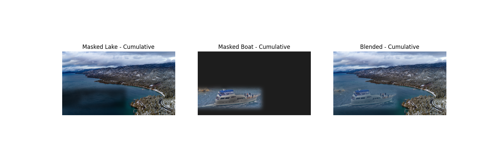
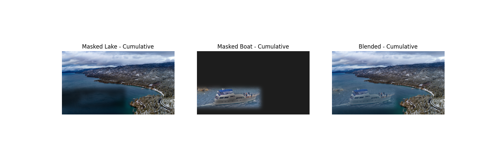
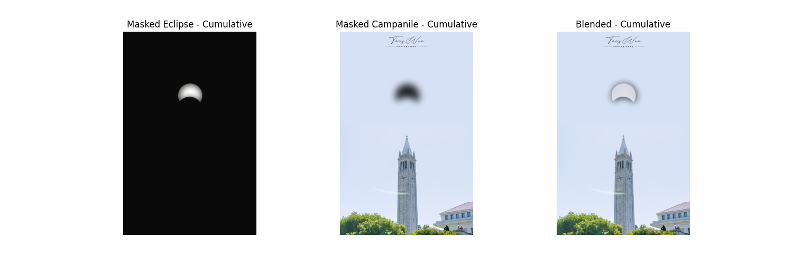
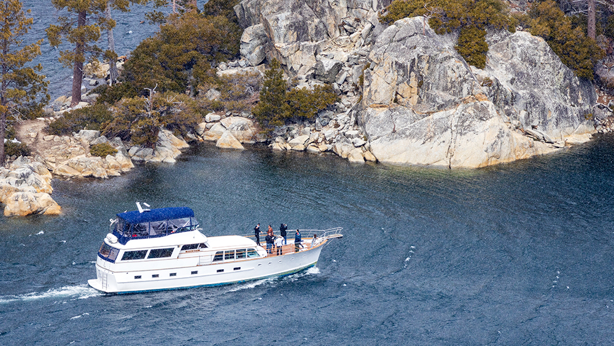
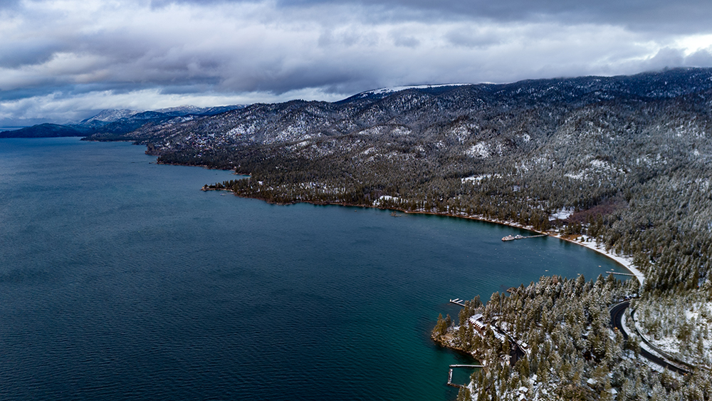
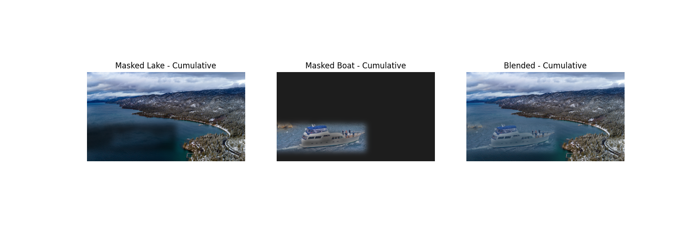